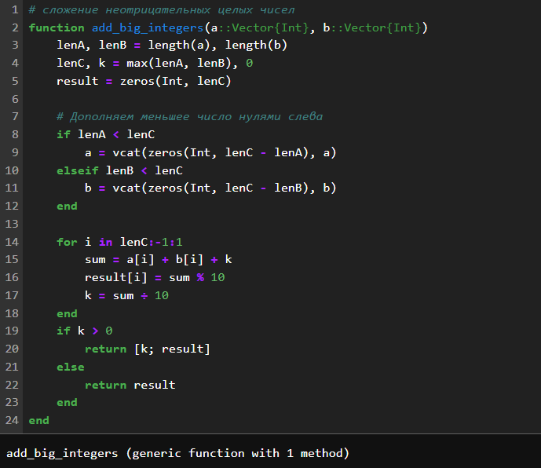
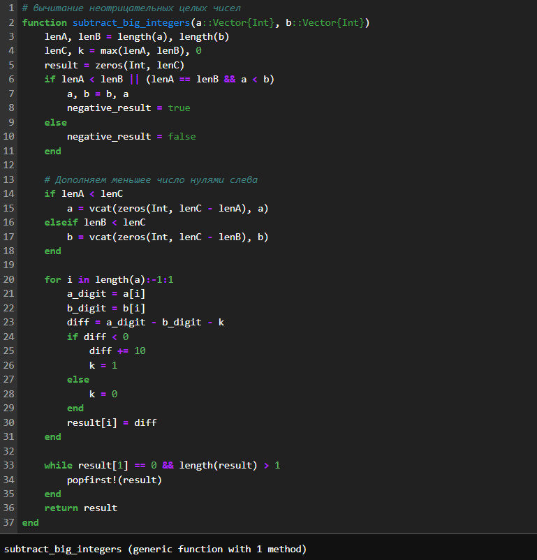
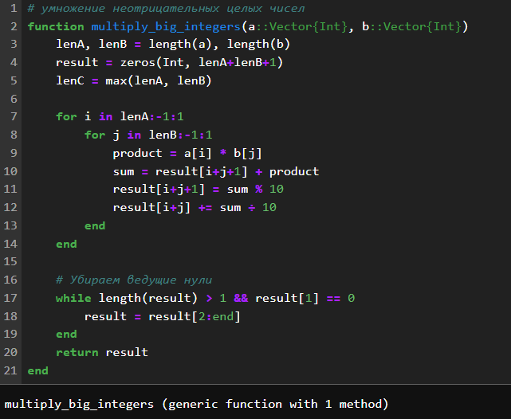
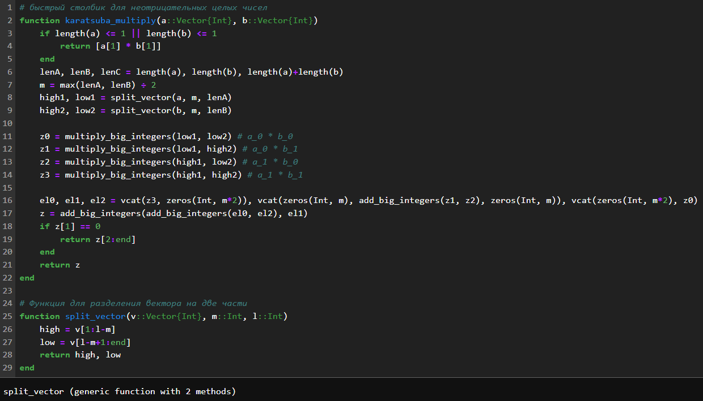
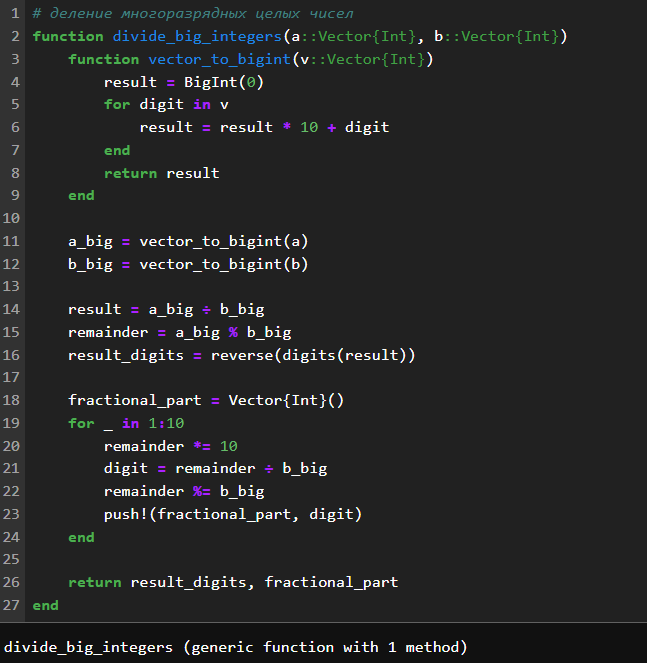
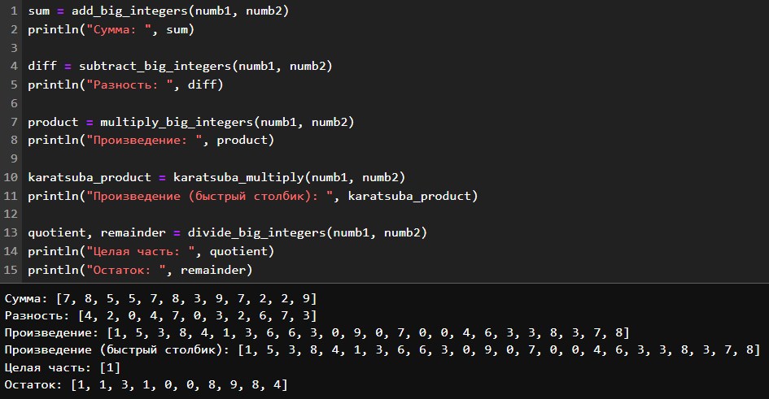

Евдокимов Максим Михайлович. Группа - НФИмд-01-24.
5 октября, 2024, Москва, Россия
Цели и задачи работы
Цель лабораторной работы
Реализовать все рассмотренные алгоритмы программно.
Задание
сложение неотрицательных целых чисел.
вычитание неотрицательных целых чисел.
умножение неотрицательных целых чисел.
быстрый столбик.
деление многоразрядных целых чисел.
Теоретическое введение
Сложение неотрицательных
целых чисел:
Алгоритм сложения двух многоразрядных неотрицательных целых чисел,
представленных в виде массивов цифр.
Алгоритм:
Инициализировать перенос нулем.
Для каждой цифры с наименьшего разряда:
Сложить соответствующие цифры двух чисел и перенос.
Записать младшую цифру результата в текущий разряд.
Обновить перенос.
Если после последнего разряда остался перенос, добавить его в
результат.
Вычитание неотрицательных
целых чисел:
Алгоритм вычитания двух многоразрядных неотрицательных целых чисел,
представленных в виде массивов цифр, при условии, что первое число
больше или равно второму.
Алгоритм:
Инициализировать заем нулем.
Для каждой цифры с наименьшего разряда:
Вычесть из соответствующей цифры первого числа цифру второго числа и
заем.
Если результат отрицательный, добавить 10 и установить заем в
1.
Записать результат в текущий разряд.
Удалить ведущие нули из результата.
Умножение неотрицательных
целых чисел:
Алгоритм умножения двух многоразрядных неотрицательных целых чисел,
представленных в виде массивов цифр.
Алгоритм:
Инициализировать результат нулем.
Для каждой цифры второго числа с наименьшего разряда:
Умножить первое число на эту цифру.
Сдвинуть результат влево на соответствующее количество
разрядов.
Сложить результат с текущим результатом.
Быстрый столбик - алгоритм
Карацубы:
Алгоритм умножения двух многоразрядных неотрицательных целых чисел,
основанный на принципе “разделяй и властвуй” и позволяющий уменьшить
количество умножений по сравнению с классическим алгоритмом.
Алгоритм:
Разделить каждое число на две равные части.
Вычислить три промежуточных произведения:
Произведение первых частей чисел.
Произведение вторых частей чисел.
Произведение сумм первых и вторых частей чисел.
Использовать промежуточные произведения для вычисления конечного
результата.
Деление многоразрядных целых
чисел:
Алгоритм деления двух многоразрядных неотрицательных целых чисел,
представленных в виде массивов цифр, с получением частного и
остатка.
Алгоритм:
Инициализировать частное и остаток нулями.
Пока делимое больше или равно делителю:
Оценить максимально возможное значение очередной цифры
частного.
Умножить делитель на эту цифру и вычесть результат из делимого.
Добавить цифру к частному.
Остаток равен текущему значению делимого.
Примечания:
Все алгоритмы предполагают, что числа представлены в системе
счисления с основанием 10.
Алгоритмы могут быть адаптированы для работы с другими системами
счисления.
Алгоритм Карацубы имеет сложность O(n^log2(3)), что лучше, чем
O(n^2) для классического алгоритма умножения.
Ход работы
Задание 1

Сумма целых неотрицательных
чисел
Задание 2

Разница целых неотрицательных
чисел
Задание 3

Умножение целых неотрицательных
чисел
Задание 4

алгоритм Карацуба для целых
неотрицательных чисел
Задание 5

Деление целых неотрицательных
чисел
Значения для проверки
Сгенерированные значения
Результаты

Результаты применения всех алгоритмов к
векторам
Выводы по проделанной работе
Вывод
В ходе выполнения лабораторной работы выли изучены способы работы с
алгоритмами целочисленной арифметики многократной точности, а также на
их основе реализованны функции суммирования, разности, умножения,
быстрого столбика и деления для целых неотрицательных чисел в виде
векторов цифр.